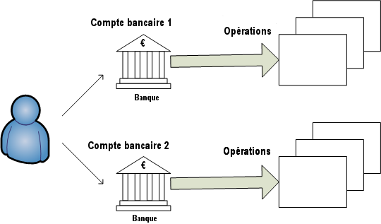

Money Manager Ex (MMEX) est un logiciel libre, à code source ouvert et multi-plateforme de gestion des comptes personnels. Son but est de vous aider à organiser vos finances et à suivre les flux d'argent.
MMEX inclut toutes les fonctions de base que 90% des utilisateurs souhaiteraient voir dans un logiciel de finances personnelles. Les objectifs de conception sont de se concentrer sur la simplicité et la convivialité - une application qui peut être utilisée au quotidien.
MMEX est un système de gestion financière permettant à chacun de suivre son argent, ses devises, ses biens et ses habitudes de dépenses. MMEX est basé sur des principes simples, pour permettre à toute personne ayant peu ou pas de connaissances en finances et en comptabilité générale de gérer avec succès ses finances. MMEX le fait en modélisant le monde financier réel, pour aider l'utilisateur à gérer ses finances personnelles. MMEX est un logiciel gratuit (sans paiement ni frais) et à code source ouvert.
Le premier objectif de MMEX est de simplifier le processus de suivi le suivi de vos finances, dans un programme facile à utiliser qui peut être utilisé aussi régulièrement que nécessaire, pour aider à suivre d'où vient l'argent et, plus important encore, où va l'argent, afin de prendre des décisions financières plus éclairées.
Il faut considérer MMEX comme un livre de comptes informatique qui vous permet d'équilibrer vos comptes, de les organiser, de les gérer et de générer des états de vos finances.
C'est aussi un bon moyen de vous tenir au courant de la valeur de vos avoirs.
Le but de ce manuel est de vous donner les instructions et connaissances de base pour utiliser MMEX. Ce manuel évoluera en même temps que le logiciel, aussi n'hésitez pas à consulter l'aide lors de chaque mise à jour afin de découvrir les nouveautés et ainsi tirer le meilleur parti de MMEX.
Être organisé financièrement requiert un minimum de discipline. La gestion financière est difficile dès l'instant où l'on n'a pas une vision claire de la trésorerie et de l'équilibre entre les revenus et les dépenses.
Les dettes résultent généralement de dépenses qui ne sont pas compensées par des revenus. Nous devons ensuite emprunter de l’argent pour maintenir notre trésorerie à flot et nous permettre d’acheter les biens dont nous avons besoin.
La première étape vers une meilleure organisation financière est une bonne tenue des comptes. C'est seulement lorsque l'on prend conscience du volume des dépenses quotidiennes, qu'apparaît la compréhension des moyens de les réduire. Si nous devons emprunter de l'argent, nous pouvons aussi mieux gérer nos dettes.
Vous êtes-vous rendu compte que vous aviez dépensé 600€ en achat de DVD l'année dernière ? Combien de fois avez-vous regardé ces derniers ? Ne pensez-vous pas à présent que ces 600€ auraient été mieux utilisés pour la réparation imprévue de votre véhicule hier ? Bien sûr il n'y a pas de bonne ou de mauvaise réponse sur la façon dont vous devez dépenser votre argent. Après tout, il s'agit de votre argent et vous avez le droit de le dépenser comme bon vous semble. En revanche vous pouvez toujours faire qu'il soit dépensé de façon plus efficace. Et espérer ainsi tirer le maximum de chaque euro dépensé.
C'est là qu'un logiciel de comptes personnels intervient. Il vous permet de structurer, d'examiner vos données financières et ainsi vous donner une meilleure visibilité sur ce qui se passe. Rappelez-vous toujours que le logiciel ne sera pas meilleur que les informations que vous lui aurez fournies. A données fausses, résultats faux. Mais déjà, si vous avez commencé à envisager un logiciel de comptes personnels, alors vous êtes sur la bonne voie pour une meilleure utilisation de chacun de vos euros.
Continuons la lecture pour voir comment travailler avec MMEX.
MMEX modélise le monde financier réel pour nous aider à gérer nos finances personnelles.
Généralement nous recevons de l'argent de quelqu'un pour un service rendu ou un bien que nous vendons. Ceci est vu comme un Crédit ou un Dépôt dans notre logiciel. Quand nous achetons quelque chose ou utilisons un service, l'argent dépensé est vu comme une Dépense ou un Retrait dans notre logiciel. Dans MMEX, la personne qui nous a donné de l'argent ou qui a reçu notre argent est vu comme un Tiers.
Comme, espérons-le, nous ne dépensons pas tout l'argent que nous recevons, il est évident que nous avons besoin d'un endroit où garder notre argent. Il s'agit généralement d'une ou de plusieurs institutions financières ou de notre poche. MMEX appelle ces endroits des Comptes.
Lorsque nous dépensons ou recevons de l'argent, nous appelons cela une Transaction, et le motif de notre revenu ou de notre dépense est notre Catégorie. Il y aura des moments où nous devrons transférer de l'argent d'un endroit à un autre, comme d'un distributeur automatique vers notre portefeuille, et ce type de transaction est appelé un virement.
Cela peut être décrit par le diagramme suivant.
Une autre chose importante à considérer est la devise que nous utilisons pour réaliser les transactions.
Avec toutes ces choses à suivre, MMEX utilise une base de données pour stocker et relier tous ces concepts.
La base de données que produit MMEX, vue comme un fichier .mmb,
devient un fichier important à maintenir. Selon les
circonstances, des fonctions de sécurité comme le chiffrement peuvent être employées,
dans ce cas la base de données sera un fichier .emb. Un mot de passe
sera alors attaché à la base de données, et ce mot de passe devra être fourni
chaque fois que MMEX sera ouvert.
Comme pour tout système informatique, les données que nous produisons sont importantes pour nous et doivent donc être protégées contre tout dysfonctionnement du système. MMEX dispose d'un système de sauvegarde qui lui permet de produire une copie datée lorsque la base de données est ouverte et/ou lorsque des modifications ont été détectées. Par défaut, jusqu'à 4 sauvegardes sont conservées pour chaque base de données lorsque le système est initialisé et/ou lorsque des modifications du système ont été détectées et que le système s'arrête.
.mmb ou .emb régulièrement..mmb ou .emb.
Quand MMEX démarre, il va essayer de charger la dernière base de données qui avait été ouverte. S'il ne la trouve pas, le choix est offert à l'utilisateur d'ouvrir une base de données existante ou d'en créer une nouvelle.
Si vous avez besoin de créer une nouvelle base, dans le Menu, sélectionnez la fonction Fichier → Nouvelle base de données….
Il vous sera demandé de définir le nom et le dossier du nouveau fichier .mmb.
Ceci fait, la nouvelle base est alors créée et l'assistant Nouvelle base de données
va être affiché pour vous aider à initialiser la nouvelle base et à créer votre premier compte.
L'assistant vous demandera de définir la devise principale et d'indiquer un nom d'utilisateur.
MMEX est fourni avec un jeu de devises que vous pouvez utiliser, pour correspondre aux réglages de votre pays. Les nouveaux comptes utiliseront par défaut la devise principale. Cela permet à des comptes de pays différents d'indiquer leur valeur dans la devise principale.
Pour aider à identifier l'objet de la base de données, un Nom d'utilisateur peut être renseigné. Sa fourniture est optionnelle, car il est seulement utilisé comme un titre dans le tableau de bord et dans les rapports.
Si besoin, les deux réglages peuvent être modifiés plus tard via le menu Outils → Paramètres….
Le nom de la base de données est affiché dans la barre de titre,
ce qui vous permet de savoir quelle base est ouverte.
La nouvelle base de données .mmb n'est pas chiffrée.
Pour chiffrer la base de données ouverte dans MMEX, utilisez le menu Fichier → Enregistrer la base de données sous…, indiquez le nom du fichier et sélectionnez le type "Base de données chiffrée MMEX (.emb)". Il est possible de revenir à une base de données non chiffrée en utilisant le même menu et en sélectionnant le type "Base de données MMEX (.mmb)".
Quand vous créez une nouvelle base de données, il vous sera automatiquement demandé de créer un premier compte.
Pour créer manuellement un nouveau compte, depuis le menu, sélectionnez Comptes → Nouveau compte….
Ceci va afficher l'assistant Nouveau compte. Cet assistant vous assiste pour collecter les informations importantes que sont le nom et le type de compte. Le type de compte ne peut pas être modifié, mais le nom peut être changé en éditant les informations du compte.
Nom du compte : C'est un champ requis.
Il est recommandé de donner un nom unique à chaque compte et de préférence en lien avec le compte du monde réel.
Ainsi, si vous avez un seul compte à la banque du Crédit du Sud, vous pouvez appeler votre compte tout
simplement Crédit du Sud
.
Type de compte: MMEX supporte différents types de comptes.
Pour mettre en place correctement vos comptes dans MMEX, vous devez disposer des valeurs de solde de ces derniers. Ces informations figurent dans vos derniers relevés de situation de comptes bancaires, d'investissement ou de carte de crédit. En option, vous pouvez saisir quelques informations complémentaires sur ce compte : son numéro, la banque qui l'héberge, l'adresse du site internet de celle-ci, vos contacts à la banque et autres informations. Vous pouvez également entrer des notes libres dans le champ réservé à cet effet.
La plupart des comptes comportent un solde. Ainsi, si votre compte bancaire présente par exemple un solde créditeur de 2 304,67€, vous devrez indiquer cette valeur comme valeur initiale dans le champ approprié. Ensuite, vous n'aurez plus qu'à saisir les opérations après cette date.
Les comptes sur MMEX ont un statut : soit "Ouvert", soit "Fermé". Le statut fermé d'un compte est explicite : ce compte n'est plus utilisé. Lui donner ce statut est un moyen de clarifier l'affichage en éliminant les comptes fermés dans l'arbre de navigation (barre à gauche de l'écran). Le réglage permanent est fait via le menu Outils → Paramètres…, où vous pouvez cacher les comptes fermés. Voyez Astuces Navigateur.
Devise : La devise est initialement celle de la devise principale définie lors de la création de la base de donnée. La monnaie utilisée par chaque compte peut être choisie librement.
Le taux de change de la devise choisie peut être changé via le menu Outils → Gestionnaire de devises….
Exemple : Vous habitez en France, utilisez des Euros et avez un compte britannique utilisant la livre anglaise. La plupart de vos comptes sont en Euros. Quelle est la valeur de votre compte britannique en Euros ? En indiquant le taux de change pour la livre britannique, vous pouvez avoir la valeur du compte britannique en Euros.
Vous avez la possibilité de déclarer certains de vos comptes comme favoris. Ceci est un autre moyen de clarifier l'affichage des comptes figurant dans l'arbre de navigation. Voyez Astuces Navigateur.
Nous avons un compte d'épargne avec 1 250€, un compte-chèque avec 500€, une dette de carte MasterCard de 250€, une dette de carte Visa de 475€, un crédit immobilier de 230 965€ et un compte à terme pour financer les futures études supérieures des enfants d'une valeur de 5 000€.
Nous pouvons créer les comptes suivants :
| Type de compte | Nom du compte | Solde initial |
|---|---|---|
| Chèque/Épargne | Épargne | 1 250,00€ |
| Chèque | 500.00€ | |
| Carte MasterCard | -250,00€ | |
| Carte Visa | -475,00€ | |
| Compte à terme | Crédit immobilier | -230 965,00€ |
| Compte études | 5 000,00€ |
Dans le tableau de bord, le solde est de 1 025€ pour les comptes Chèque/Épargne, et -225 965€ pour les comptes à terme.
Quand un paiement avec la carte MasterCard est fait du compte d'épargne avec une transaction de virement, le solde du tableau de bord reste le même. Quand un paiement est fait du compte d'épargne vers le crédit immobilier, le solde du tableau de bord va refléter le paiement. Maintenant, vous pouvez déterminer l'argent dont vous disposez au quotidien. Les paiements réguliers peuvent aussi être configurés du compte d'épargne vers le crédit immobilier via le menu Outils → Opérations récurrentes.
Une fois qu'un compte est créé, vous pouvez éditer toutes les informations du compte des façons suivantes :
Cela va afficher la fenêtre d'édition du compte où les champs souhaités peuvent être modifiés.
Éditez les champs du compte puis utilisez le bouton OK pour sauvegarder les informations du compte.
Une fois qu'un compte a été créé, et sélectionné depuis le Navigateur ou le Tableau de bord, des transactions peuvent être ajoutées au compte affiché en procédant ainsi :
Une fenêtre va apparaître pour créer une transaction. Utilisez cette fenêtre pour entrer les informations suivantes :
Éditer les transactions existantes peut être effectué de plusieurs façons :
Toutes ces actions vont ouvrir la fenêtre d'édition de l'opération contenant les détails de la transaction sélectionnée. Faites les modifications puis cliquez sur OK pour les enregistrer.
Les transactions peuvent être filtrées par, soit des filtres fixes, soit le filtre de transaction de la vue du compte. Cela permet à l'utilisateur de limiter les transactions visibles à celles définies par les filtres appropriés. Les transactions filtrées peuvent être facilement sélectionnées et modifiées individuellement.
Les transactions visibles peuvent aussi être supprimées en bloc si désiré.
Dans MMEX, les transactions pointées ont une icône différente de ceux des transactions non pointées. Lorsque l'utilisateur ne souhaite pas vérifier ses relevés des comptes bancaires, il peut choisir, dans le réglages des paramètres, de marquer les transactions comme pointées par défaut à leur création.
Certaines opérations peuvent vous causer quelques soucis et nécessiter un suivi. Repérez-les avec le statut Suivi. Elle apparaîtront avec une icône différente.
L'utilisateur peut choisir 7 couleurs personnalisées dans le cadre Couleurs de la transaction de la section Affichage du réglage des paramètres. Dans la vue du compte, presser Ctrl+1 à Ctrl+7 applique la couleur correspondante à la transaction sélectionnée. Presser Ctrl+0 permet de revenir à la couleur par défaut.
MMEX fournit plusieurs outils pour aider à retrouver des transactions spécifiques. Le champ Remarques des transactions peut être recherché depuis la vue du compte. En bas de la liste des transactions dans la vue du compte, entrez le texte à rechercher dans le champ à droite de la loupe. Cliquez ensuite sur la loupe ou pressez la touche Entrée pour rechercher le texte dans les transactions de ces comptes.
Pour trouver un tiers spécifique, ouvrez le Gestionnaire de Tiers via le menu Outils → Gestionnaire des Tiers….
Dans la fenêtre du Gestionnaire des Tiers, utilisez le champ de recherche pour entrer votre requête. La recherche n'est pas sensible à la casse, et la liste des tiers est filtrée au fur et à mesure de la saisie.
Si vous ne connaissez pas le nom exact ou l'orthographe d'un tiers, vous pouvez utiliser le caractère joker ? (point d'interrogation) pour remplacer un seul caractère, ou le caractère joker * (astérisque) pour remplacer plusieurs caractères.
Les Tiers représentent les entités du monde réel avec lesquelles vous avez eu des débits ou des crédits.
Vous pouvez éditer les tiers en utilisant le menu Outils → Gestionnaire des Tiers….
Une fois la fenêtre de dialogue des tiers ouverte, vous pouvez ajouter de nouveaux tiers, éditer ou supprimer un tiers existant.
Pour ajouter un nouveau tiers :
Vous pouvez aussi choisir un tiers dans la liste, puis faire un clic droit avec la souris puis utiliser l'action Éditer ou Effacer dans le menu contextuel.
Pour supprimer un tiers, assurez-vous qu'aucune transaction ne l'utilise. Ceci peut être fait en :
Ceci libérera le tiers de toute utilisation, ce qui permettra de le supprimer.
Une catégorie indique la raison d'une dépense ou d'une recette.
Une catégorie est généralement utilisée pour enregistrer un crédit ou un débit. Comme MMEX permet de virer de l'argent entre comptes, il est aussi recommandé d'utiliser les catégories pour enregistrer ces virements. Cela va permettre de déterminer quelle somme est transférée pour une raison spécifique, comme le remboursement d'un prêt. Cela ne sera pas vu comme une recette ou une dépense au niveau global. Utiliser la même catégorie pour une recette et une dépense perturbera l'équilibre du tableau de bord.
Exemple : si nous voulons enregistrer le coût d'utilisation d'une voiture, nous pourrions configurer les éléments suivants :
Les quatre premières sous-catégories sont utilisées pour enregistrer des dépenses. Si nous sommes remboursés du carburant pour une raison quelconque, nous aurons à utiliser Remboursement du carburant comme une sous-catégorie de recettes. Cela nous permettra de déterminer le montant exact que nous dépensons en carburant pour la voiture. Cela deviendra plus clair lorsque nous utiliserons le Planificateur budgétaire.
Lors de la création d'une nouvelle transaction, nous pouvons utiliser plus d'une catégorie dans la transaction. Cela devient alors une transaction fractionnée.
La transaction fractionnée est globalement, soit un débit, soit un crédit, bien qu'on puisse utiliser les deux types dans les catégories de la transaction fractionnée. Dans une transaction fractionnée de débit, les sommes affectées en débit doivent être supérieures à celles affectées en crédit. Et inversement pour une transaction fractionnée de crédit.
Si une transaction est fractionnée, ses catégories peuvent facilement être vues en utilisant le menu contextuel.
Vous pouvez gérer les catégories en ouvrant le menu Outils → Gestionnaire des catégories…. Une fois que la fenêtre de dialogue est affichée, vous pouvez ajouter de nouvelles catégories et sous-catégories.
Pour ajouter une nouvelle catégorie :
Pour ajouter une nouvelle sous-catégorie :
Vous pouvez aussi changer les noms : sélectionnez la catégorie ou la sous-catégorie dans l'arbre, puis cliquez sur le bouton Éditer, puis entrez son nouveau nom, enfin cliquez sur le bouton OK. Vous pouvez supprimer une catégorie ou une sous-catégorie en procédant de manière similaire avec le bouton Supprimer.
Assurez-vous qu'aucune transaction n'utilise cette catégorie ou sous-catégorie. Cela peut être fait en :
Ceci libérera la catégorie de toute utilisation, ce qui permettra de la supprimer.
Vous pouvez imbriquer les sous-catégories. Des informations sont disponibles ici : catégories imbriquées #1477.
RAF, des informations sont disponibles ici : Ajout de "classes" ou "étiquettes" #5439.
Pour mettre à jour cette section, mettez à jour https://github.com/moneymanagerex/moneymanagerex/blob/master/docs/fr_FR/index.html.
Comme MMEX peut être utilisé dans de nombreux pays, MMEX a besoin de connaître la devise du pays d'utilisation. A la création d'une nouvelle base de données, la devise principale est utilisée en tant que devise pour le pays de l'utilisateur. Si la devise du pays n'est pas présente dans la liste des devises, l'utilisateur peut créer la devise souhaitée lui-même.
MMEX permet de travailler avec plusieurs devises. Chaque compte a son propre réglage de la devise, avec la devise principale comme devise par défaut. Quand nous créons des comptes avec des devises différentes, les transactions créées dans ces comptes vont utiliser la devise du compte.
Vous pouvez gérer les devises en utilisant le menu Outils → Gestionnaire de devises….
Ajouter une nouvelle devise :
Quand plus d'une devise est utilisée, le champ Conversion au taux de base
doit être renseigné. Cela va permettre à la valeur de la devise
de refléter correctement la valeur au taux de base.
Pour permettre la mise à jour du taux de change, le symbole de la devise doit être renseigné pour la devise utilisée.
MMEX peut importer des données à partir d'une grande
variété de formats. L'un d'eux est un fichier CSV au format fixe. Ce
format de fichier est aussi celui utilisé par MMEX pour exporter des données. Il peut donc
être utile pour déplacer des données d'une base de données .mmb vers
une autre base de données .mmb. Pour voir comment est constitué ce format de fichier,
vous pouvez exporter un compte vers un fichier CSV puis analyser le fichier créé.
Pour atténuer le problème des utilisateurs devant préformater leurs fichiers CSV de transactions bancaires dans le format fixe requis par MMEX, MMEX permet également aux utilisateurs d'importer des fichiers CSV dont l'ordre des champs est entièrement libre.
Pour réaliser cet import, sélectionnez le compte dans lequel vous souhaitez importer, puis indiquez l'ordre des champs du fichier en piochant dans la liste des champs possibles dans l'ordre souhaité. MMEX va maintenant importer le fichier CSV en utilisant les informations de format spécifiées par l'utilisateur.
Les champs du fichier CSV sont les suivants :
Lors de la création de votre fichier CSV, veillez à supprimer les virgules de vos dépôts et retraits. Cela peut être fait facilement à l'aide d'un tableur tel que LibreOffice Calc.
Après l'import, toutes les transactions auront un Statut valant Suivi. Vous pouvez marquer toutes les transactions avec cet indicateur à l'aide des commandes de configuration de statut en masse à l'aide du menu contextuel du clic droit dans la vue du compte.
L'importation de fichiers XML supporte les fichiers XML au format Excel
nommé Feuille de calcul XML 2003
dans Excel. Il s'agit de la
méthode d'importation recommandée si vous devez importer des transactions à partir d'Excel.
La méthode d'importation et la sélection des champs sont identiques à
celles de l'importation à partir de fichiers CSV.
Le format Quicken Interchange Format (QIF) est un standard libre d'échanges de données financières sous forme de fichiers. Un fichier QIF se présente généralement de la façon suivante :
!Type:chaîne de caractères désignant le type [caractère unique de code]chaîne de caractères de données ... ^ [caractère unique de code]chaîne de caractères de données ... ^
Chaque enregistrement se termine par le caractère ^ (accent circonflexe).
Voici un exemple d'opération QIF :
!Type:Bank Header
D6/ 1/94 Date
T-1,000.00 Amount
N1005 number
PBank Of Mortgage Payee
^ End of transaction
QIF est plus ancien que le format Open Financial Exchange (OFX). L'un des défauts principaux de QIF est son inaptitude à réconcilier les données importées avec celles des comptes existants. Il est généralement adopté par les organismes financiers pour le téléchargement de données vers leurs clients possesseurs de comptes.
MMEX peut importer des opérations en format QIF pour certains types de comptes (vous pouvez trouver le type de fichier QIF en l'ouvrant dans un éditeur de texte).
Ces types sont les suivants :
Après l'import, toutes les transactions auront un Statut valant Suivi. Vous pouvez marquer toutes les transactions avec cet indicateur à l'aide des commandes de configuration de statut en masse à l'aide du menu contextuel du clic droit dans la vue du compte.
MMEX possède une application web WebApp simple qui peut être installée sur tout serveur web PHP comme un NAS, un hébergement partagé ou un autre serveur PHP local.
Vous pouvez télécharger les fichiers nécessaires depuis la page du projet WebApp.
Pour démarrer WebApp, vous avez seulement à :
htaccess.txt en .htaccess (sous Windows, vous devez le faire
depuis une fenêtre CMD et avec la commande rename)
PDO_SQLite si besoinEnsuite ouvrez votre navigateur web sur l'URL du dossier, renseignez d'abord les options puis indiquez l'URL correcte et le GUID dans les paramètres de MMEX (onglet Réseau).
Dorénavant, à chaque démarrage, MMEX va contacter l'application WebApp pour obtenir les nouvelles opérations qui seront téléchargées et importées dans sa base de données.
Toutes les données reliées aux opérations seront automatiquement synchronisées avec WebApp, ainsi vous aurez tous vos comptes et bénéficiaires prêts à être utilisés dans les nouvelles opérations.
MMEX peut exporter des données vers un fichier CSV au format fixe.
Ce format de fichier correspond exactement au format des fichiers que MMEX peut importer,
ce qui peut être très utile pour déplacer des données d'un fichier .mmb vers un autre.
Pour voir comment est constitué ce format de fichier,
vous pouvez exporter un compte vers un fichier CSV puis analyser le fichier créé.
Le format général est le suivant :
MMEX peut exporter des données vers un fichier XML. Le format XML est compatible avec, et peut être lu, par un tableur comme LibreOffice Calc. Le format général est identique à celui des fichiers CSV.
MMEX peut exporter les données d'un compte vers un fichier au format QIF. Un fichier à ce format peut aussi être relu par MMEX pour importer dans un compte.
Les opérations récurrentes sont des opérations spéciales que nous configurons pour qu'elles soient enregistrées dans la base de données à une date future. Ces opérations arrivent généralement avec une périodicité fixe, comme le paiement d'une facture.
Ces opérations :
Les opérations récurrentes sont accessibles depuis le navigateur ou depuis le menu Outils → Opérations récurrentes. Cela va afficher la page des opérations récurrentes.
Pour créer une nouvelle opération, utilisez le bouton Nouveau :
Pour créer une opération récurrente à partir d'une opération existante, sélectionnez la ligne de l'opération, faites un clic droit pour ouvrir le menu contextuel et sélectionnez Créer une opération récurrente….
MMEX peut être utilisé pour gérer les titres (actions, fonds communs de placement, etc). La valeur de vos titres est ajoutée au total de vos avoirs.
Pour plus de détails, voyez Gérer les titres avec MMEX
MMEX permet de suivre votre portefeuille de biens tels que véhicules, maisons, propriétés et autres. Chaque bien est caractérisé par une valeur et une évolution de celle-ci : en diminution d'un certain taux annuel, stable ou en augmentation d'un certain taux annuel.
La valeur de vos biens est ajoutée au total de vos avoirs.
L'accès aux biens se fait via le menu Outils → Biens ou via le navigateur.
Les biens sont créés dans la fenêtre de gestion des biens.
Les opérations sur les biens sont ajoutées à un bien et liées à un compte.
MMEX permet de produire différents types de rapports. Choisissez le type du rapport à établir parmi ceux figurant dans l'arbre de navigation. Certains rapports requièrent la saisie de données de la part de l'utilisateur, d'autres non.
Ces rapports sont généralement utilisés dans un cadre fiscal où l'année fiscale ne commence pas nécessairement au début de l'année calendaire. Ces rapports incluent :
La date de début peut être changée par l'utilisateur pour débuter n'importe quel jour de n'importe quel mois, dans une période de 12 mois, en utilisant le menu Outils → Paramètres… → Général.
Cela permet à l'utilisateur de produire des rapports spécifiques basés sur les critères qu'il a choisis.
Un rapport d'opérations est généralement utilisé pour trouver une transaction spécifique fait dans un compte courant ou un compte à terme. Ce rapport peut aussi être utilisé pour afficher les détails spécifiques à un compte particulier.
La liste d'opérations listée dans un rapport d'opérations peut être imprimée ou enregistrée dans un fichier HTML.
Puisqu'une opération de virement est un débit d'un compte et un crédit dans un autre compte, un rapport d'opérations fait sur plusieurs comptes perd le contexte permettant de déterminer si l'opération est un débit ou un crédit.
Quand un rapport d'opérations est fait sur un seul compte, il va produire un rapport qui correspond aux détails de ce compte. Le contexte des virements est connu pour un tel rapport, ce qui permet au rapport d'afficher des soldes corrects.
Ce rapport effectue une projection de l'argent disponible, basé sur les engagements futurs.
Ce rapport va utiliser les opérations récurrentes des différents comptes, et se projeter sur 10 ans sur une base mensuelle. Cela devient une prédiction de l'argent qui sera disponible chaque mois basé sur les dépenses actuelles.
MMEX permet l'impression de tous les rapports affichés.
Lorsqu'un rapport est affiché, vous pouvez l'imprimer en utilisant le menu Fichier → Imprimer….
Vous pouvez modifier le comportement de MMEX en modifiant la configuration dans les paramètres.
L'accès se fait depuis le menu Outils → Paramètres….
Vous pouvez contribuer en :
MMEX a été développé au départ comme un logiciel de gestion de comptes personnels nommé Money Manager. Il était écrit en .NET et était davantage un exercice d'apprentissage qu'un projet sérieux de développement. Son développement a été bien au-delà du projet original. Le développement a été interrompu et a recommencé avec une nouvelle version présentant les mêmes interfaces caractéristiques, mais écrite en C++.
Habituellement Microsoft distingue la seconde version d'une API améliorée
en lui adjoignant la terminaison Ex, par exemple comme dans FaitQuelqueChose() et
FaitQuelqueChoseEx(). Cette convention a été suivie pour MMEX et donc un ‘Ex’
a été ajouté.
La structure de la base de données est documenté sur https://github.com/moneymanagerex/database, le diagramme étant à jour pour la version courante de la base de données de MMEX (v19). Cliquer sur le lien donne accès à une version interactive.
.mmb est propriétaire ?Non, le format des fichiers .mmb n'est pas un format propriétaire.
Pour stocker les données, MMEX utilise des bases de données SQLite. Cela
signifie que le fichier .mmb est une base de données SQLite parfaitement standard.
SQLite est un des plus simples systèmes de base de données libre
(Open Source) et on peut trouver des quantités
d'applications pour les ouvrir et les consulter.
SQLite Browser
et wxSQLitePlus
en sont deux exemples. Une fois que vous accédez à la base de données avec ces outils,
vous pouvez faire tout ce que vous voulez avec les données.
Oui. Vos données sont en parfaite sécurité.
Les données sont stockées sur votre PC (ou votre clé USB si vous utilisez MMEX en version portable). Pour améliorer leur protection, les données peuvent dorénavant être chiffrées. Cela applique un mot de passe au fichier de base de données, et il peut seulement être ouvert par MMEX, ou tout autre logiciel, si vous connaissez le mot de passe.
Yes.
MMEX est une application portable ce qui signifie qu'il peut être utilisé
sans installation, par exemple, depuis une clé USB. Si MMEX
trouve le fichier mmexini.db3 dans son dossier, il fonctionne en mode portable.
Copiez les fichiers de MMEX sur votre clé USB et copiez votre fichier
mmexini.db3 dans le dossier de MMEX sur cette clé USB.
Pour rendre MMEX portable :
F:\ est la clé USB)
C:\Program Files\MoneyManagerEx dans
F:\%APPDATA%\MoneyManagerEx\mmexini.db3 dans
F:\MoneyManagerExF:\/media/disk soit la clé USB montée)
make install prefix=/media/disk cp ~/.mmex/mmexini.db3 /media/disk/mmex/share/mmex
/usr :
cp /usr/bin/mmex /media/disk/mmex/bin cp /usr/share/mmex /media/disk/mmex/share cp /usr/share/doc/mmex /media/disk/mmex/share/doc cp ~/.mmex/mmexini.db3 /media/disk/mmex/share/mmex
De façon générale, avec un logiciel propriétaire, vous n'avez que la parole du vendeur concernant la sécurité de vos données. Mais dans le cas de MMEX, vous avez affaire à un logiciel libre(Open Source), ce qui vous permet de vérifier par vous-même.
Même si vous n'êtes pas un expert en C++, vous avez la tranquillité de savoir que n'importe qui à n'importe quel moment peut accéder au code source et vérifier la pureté des intentions des développeurs de MMEX.
MMEX se connecte à internet seulement pour envoyer des statistiques d'utilisation anonymes ou pour savoir s'il existe une version plus récente. Voici un exemple de ce que MMEX envoie :
| Version | Operating System | Language | Country | Resolution | Start Time | End Time |
|---|---|---|---|---|---|---|
| 1.3.0 Portable | Windows 8 (build 9200), 64-bit edition | english | United States | 1366x768 | 2014-05-01 09:00:00 | 2014-05-01 09:01:30 |
Pour imprimer une liste d'opérations à partir d'un ensemble de critères, utilisez le filtre spécifique pour sélectionner les opérations que vous recherchez et imprimez ensuite à partir des options du menu Fichier → Imprimer….
Le filtre des opérations est accessible depuis Rapports → Trésorerie → Transactions dans le navigateur.